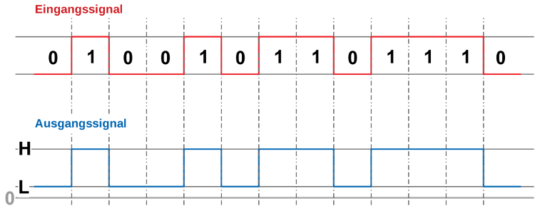
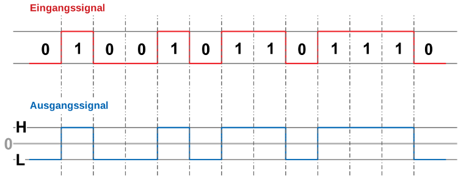
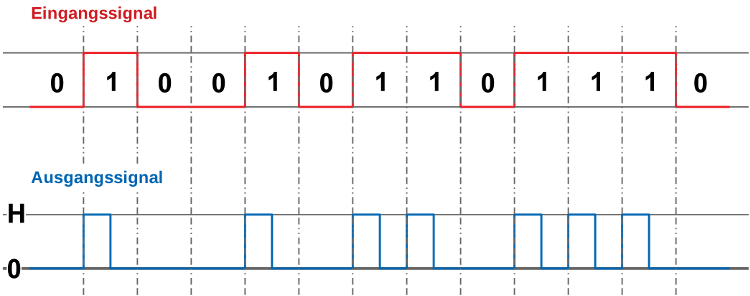
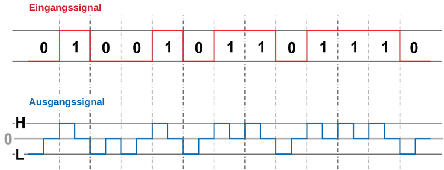
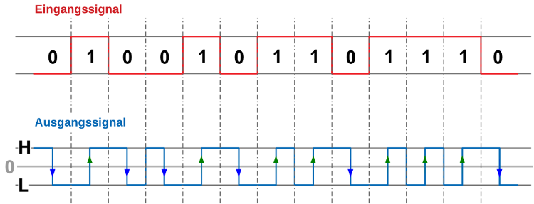

Leitungscodierung
Das kanalcodierte Signal muss noch an die physikalischen Eigenschaften des Übertragungskanals
angepasst werden.
Hier wird festgelegt, wie das Signal mit Hilfe des zur Übertragung zur Verfügung stehenden
physikalischen Mediums, z.B. Licht, Spannung, EM-Welle, übertragen wird. Binäre LeitungscodesBinäre Leitungscodes ordnen den logischen Zuständen 0 und 1 zwei definierte Pegel zu. Die Art der Zuordnung hängt vom speziellen Leitungscode ab. Diese Art der Leitungscodierung ist einfach zu realisieren, hat aber den Nachteil, dass der Übertragungskanal relativ schlecht ausgenutzt wird. Eine hohe Übertragungsrate bedingt automatisch eine hohe Grenzfrequenz. Da Kupferleitungen einen ausgeprägten Tiefpass-Charakter besitzen, ist eine Signalübertragung über längere Strecken auf diese Weise nicht machbar. NRZ-CodeBeim NRZ-Code (None Return to Zero Code) geht der Signalpegel schwankt der Signalpegel zwischen zwei Werten. Unipolare NRZ-CodierungBei der unipolaren NRZ-Codierung besitzt das leitungscodierte Signal nur zwei Pegel, die beide die selbe Polarität haben. Meist ist einer dieser Pegel die Null. Diese Art von NRZ-Codierung lässt sich einfach direkt mit Digitalbausteinen realisieren. 
Bipolare NRZ-CodierungBei der bipolaren NRZ-Codierung besitzt das leitungscodierte Signal zwei Pegel, die unterschiedliche Polarität haben. 
RZ-CodeBeim RZ-Code (Return to Zero Code) geht der Signalpegel nach einem halben Takt wieder zurück auf Null. Dabei gibt es mehrere Möglichkeiten der Pegelzuordnung, die gängig sind. Unipolare RZ-CodierungBei der unipolaren RZ-Codierung besitzt das leitungscodierte Signal nur zwei Pegel, wovon einer Null ist. Diese Art von RZ-Codierung lässt sich einfach direkt mit Digitalbausteinen realisieren. 
Bipolare RZ-CodierungBei der bipolaren RZ-Codierung besitzt das leitungscodierte Signal nur zwei Pegel unterschiedlicher Polarität. Nach einer halben Taktperiode kehrt das Signal nach Null zurück. 
Manchester CodierungBei der Manchester Codierung liegt die Information nicht in den unterschiedlichen Signalpegeln, sondern in den Wechseln von einem Pegel zum anderen in der Mitte der Signalperiode, also in den Taktflanken. In der Definition nach IEEE 802.3 bedeutet eine fallende Taktflanke eine Null und eine steigende Taktflanke eine Eins. 
|